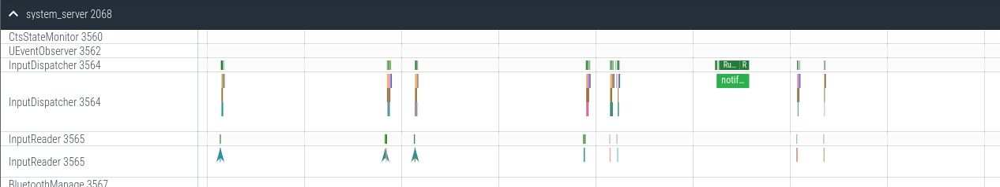
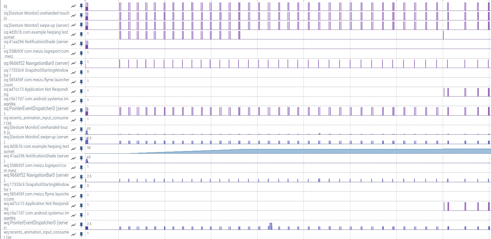
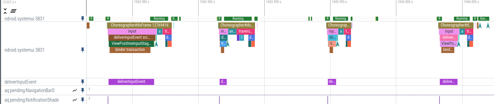

Event 日志
input_cancel：当有cancle事件发出时，就会打印出 input_cancel 日志，可以看到接受cancel的window以及cancel的原因。
input_cancel: [de8f568 NotificationShade (server),reason=transferring touch focus from this window to another window]
input_focus：当输入焦点发生变化时，会打印出input_focus日志，可以看到焦点发生变化的window以及原因。
input_focus: [Focus request 3309b96 NotificationShade,reason=UpdateInputWindows]
input_focus: [Focus leaving a2b17b9 com.android.settings/com.android.settings.Settings (server),reason=setFocusedWindow]
input_focus: [Focus entering 3309b96 NotificationShade (server),reason=setFocusedWindow]
input_interaction：事件流转过哪些window。
input_interaction: Interaction with: a2b17b9 com.android.settings/com.android.settings.Settings (server), [Gesture Monitor] swipe-up (server), [Gesture Monitor] edge-swipe (server), PointerEventDispatcher0 (server),
input_interaction: Interaction with: 9845e1f com.meizu.flyme.launcher/com.android.launcher3.uioverrides.QuickstepLauncher (server), [Gesture Monitor] swipe-up (server), [Gesture Monitor] edge-swipe (server), 145a397 com.meizu.flyme.sdkstage.wallpaper.video.m2191.VideoWallpaperV1 (server), 3309b96 NotificationShade (server), PointerEventDispatcher0 (server),
view_enqueue_input_event:
Main 日志
InputManager-JNI：input JNI 层相关日志。
InputEventReceiver:
SystemGesture-XXXXX:SystemGesture相关日志，比如 SystemGesture-GestureManager，SystemGesture-MzPhoneWindowManager，GestureManager-MzPhoneWindowManager等等。SystemGesture-MzPhoneWindowManager 可以查看具体的事件名称。
InputDispatcher:
Dumpsys
adb shell dumpsys input 通过dump查看触控事件处理系统框架部分：EventHub、InputReader、InputDispatcher的工作状态：
- Input Manager State
- Event Hub State
- Input Reader State
- Input Processor State
- Input Dispatcher State
- Input Dispatcher State at time of last ANR
- Input Manager Service (Java) State
dump 调用流程：
InputManagerService.dump()
NativeInputManager::dump()
InputManager::dump()
InputReader::dump
EventHub->dump
UnwantedInteractionBlocker::dump
InputProcessor::dump
InputDispatcher::dump
INPUT MANAGER (dumpsys input)
Input properties:
velocitytracker_strategy (flag value) = default
Input Manager State:
Interactive: true
System UI Lights Out: false
Pointer Speed: 0
Pointer Acceleration: 3.000
Pointer Gestures Enabled: true
Show Touches: false
Pointer Capture: Disabled, seq=0
PointerController:
Presentation: SPOT
Pointer Display ID: 0
Viewports:
DisplayViewport[id=0]
Width=1080, Height=2340
Transform (ROT_0) (IDENTITY)
Spot Controllers:
Event Hub 状态:
Event Hub State:
BuiltInKeyboardId: -2
Devices:
1: pineapple-mtp-snd-card USBC Jack
......
2: main_touch
Classes: KEYBOARD | TOUCH | TOUCH_MT
Path: /dev/input/event7
Enabled: true
Descriptor: c63c3be2de98f10e6bbd97f78684d819a6c862b9
Location: main_touch/input0
ControllerNumber: 0
UniqueId:
Identifier: bus=0x0002, vendor=0x27c6, product=0x0001, version=0x0100, bluetoothAddress=<not set>
KeyLayoutFile: /system/usr/keylayout/main_touch.kl
KeyCharacterMapFile: /system/usr/keychars/Generic.kcm
ConfigurationFile:
VideoDevice: <none>
SysfsDevicePath: /sys/devices/virtual
3: qbt_key_input
......
6: pmic_resin
......
7: pmic_pwrkey
......
8: gpio-keys
......
5: qcom-hv-haptics-dis
......
4: ndt
......
-1: Virtual
......
Unattached video devices:
<none>
Input Reader 状态:
Input Reader State (Nums of device: 8):
Device 8: pineapple-mtp-snd-card USBC Jack
......
Device 7: main_touch
EventHub Devices: [ 2 ]
Generation: 640
IsExternal: false
AssociatedDisplayPort: <none>
AssociatedDisplayUniqueId: <none>
HasMic: false
Sources: KEYBOARD | TOUCHSCREEN
KeyboardType: 1
ControllerNum: 0
Motion Ranges:
X: source=TOUCHSCREEN, min=0.000, max=1079.001, flat=0.000, fuzz=0.000, resolution=0.000
Y: source=TOUCHSCREEN, min=0.000, max=2339.000, flat=0.000, fuzz=0.000, resolution=0.000
PRESSURE: source=TOUCHSCREEN, min=0.000, max=1.000, flat=0.000, fuzz=0.000, resolution=0.000
SIZE: source=TOUCHSCREEN, min=0.000, max=1.000, flat=0.000, fuzz=0.000, resolution=0.000
TOUCH_MAJOR: source=TOUCHSCREEN, min=0.000, max=2577.208, flat=0.000, fuzz=0.000, resolution=0.000
TOUCH_MINOR: source=TOUCHSCREEN, min=0.000, max=2577.208, flat=0.000, fuzz=0.000, resolution=0.000
TOOL_MAJOR: source=TOUCHSCREEN, min=0.000, max=2577.208, flat=0.000, fuzz=0.000, resolution=0.000
TOOL_MINOR: source=TOUCHSCREEN, min=0.000, max=2577.208, flat=0.000, fuzz=0.000, resolution=0.000
Keyboard Input Mapper:
Parameters:
OrientationAware: false
HandlesKeyRepeat: false
KeyboardType: 1
Orientation: 0
KeyDowns: 0 keys currently down
MetaState: 0x0
KeyboardLayoutInfo: <not set>
Touch Input Mapper (mode - DIRECT):
Parameters:
GestureMode: MULTI_TOUCH
DeviceType: TOUCH_SCREEN
AssociatedDisplay: hasAssociatedDisplay=true, isExternal=false, displayId=''
OrientationAware: true
Orientation: Rotation0
UsiVersion: <not set>
EnableForInactiveViewport: false
Raw Touch Axes:
X: min=0, max=1080, flat=0, fuzz=0, resolution=0
Y: min=0, max=2340, flat=0, fuzz=0, resolution=0
Pressure: unknown range
TouchMajor: min=0, max=255, flat=0, fuzz=0, resolution=0
TouchMinor: unknown range
ToolMajor: unknown range
ToolMinor: unknown range
Orientation: unknown range
Distance: unknown range
TiltX: unknown range
TiltY: unknown range
TrackingId: min=0, max=65535, flat=0, fuzz=0, resolution=0
Slot: min=0, max=9, flat=0, fuzz=0, resolution=0
Calibration:
touch.size.calibration: GEOMETRIC
touch.pressure.calibration: none
touch.orientation.calibration: none
touch.distance.calibration: none
Affine Transformation:
X scale: 1.000
X ymix: 0.000
X offset: 0.000
Y xmix: 0.000
Y scale: 1.000
Y offset: 0.000
Viewport INTERNAL: displayId=0, uniqueId=local:4630947064936706947, port=131, orientation=0, logicalFrame=[0, 0, 1080, 2340], physicalFrame=[0, 0, 1080, 2340], deviceSize=[1080, 2340], isActive=[1]
DisplayBounds: 1080x2340
PhysicalFrameInRotatedDisplay: Rect{0, 0, 1080, 2340}
InputDeviceOrientation: 0
Translation and Scaling Factors:
RawToDisplay Transform: (ROT_0) (SCALE )
0.9991 0.0000 0.0000
0.0000 0.9996 0.0000
0.0000 0.0000 1.0000
RawRotation Transform: (ROT_0) (IDENTITY)
OrientedXPrecision: 1.001
OrientedYPrecision: 1.000
GeometricScale: 0.999
PressureScale: 0.000
SizeScale: 0.004
OrientationScale: 0.000
DistanceScale: 0.000
HaveTilt: false
TiltXCenter: 0.000
TiltXScale: 0.000
TiltYCenter: 0.000
TiltYScale: 0.000
Last Raw Button State: 0x00000000
Last Raw Touch: pointerCount=1
[0]: id=0, x=3502, y=15525, pressure=0, touchMajor=203, touchMinor=203, toolMajor=0, toolMinor=0, orientation=0, tiltX=0, tiltY=0, distance=0, toolType=FINGER, isHovering=false
Last Cooked Button State: 0x00000000
Last Cooked Touch: pointerCount=1
[0]: id=0, x=349.876, y=1551.837, dx=0.000, dy=0.000, pressure=1.000, touchMajor=202.863, touchMinor=202.863, toolMajor=202.863, toolMinor=202.863, orientation=0.000, tilt=0.000, distance=0.000, toolType=FINGER, isHovering=false
Stylus Fusion:
ExternalStylusConnected: false
Fused External Stylus Pointer ID: <not set>
External Stylus Data Timeout: 9223372036854775807
External Stylus Buttons Applied: 0x00000000 External Stylus State:
When: 0
Pressure: <not set>
Button State: 0x00000000
Tool Type: 0
Device 6: qbt_key_input
......
Device 5: qcom-hv-haptics-dis
......
Device 3: pmic_pwrkey
......
Device 2: gpio-keys
......
Device 4: pmic_resin
......
Device -1: Virtual
EventHub Devices: [ -1 ]
Generation: 3
IsExternal: false
AssociatedDisplayPort: <none>
AssociatedDisplayUniqueId: <none>
HasMic: false
Sources: KEYBOARD | DPAD
KeyboardType: 2
ControllerNum: 0
Keyboard Input Mapper:
Parameters:
OrientationAware: false
HandlesKeyRepeat: false
KeyboardType: 2
Orientation: 0
KeyDowns: 0 keys currently down
MetaState: 0x0
KeyboardLayoutInfo: <not set>
Configuration:
ExcludedDeviceNames: [qti-haptics, qcom-hv-haptics, aac-haptics]
VirtualKeyQuietTime: 0.0ms
PointerVelocityControlParameters: scale=1.000, lowThreshold=500.000, highThreshold=3000.000, acceleration=3.000
WheelVelocityControlParameters: scale=1.000, lowThreshold=15.000, highThreshold=50.000, acceleration=4.000
PointerGesture:
Enabled: true
QuietInterval: 100.0ms
DragMinSwitchSpeed: 50.0px/s
TapInterval: 150.0ms
TapDragInterval: 300.0ms
TapSlop: 20.0px
MultitouchSettleInterval: 100.0ms
MultitouchMinDistance: 15.0px
SwipeTransitionAngleCosine: 0.3
SwipeMaxWidthRatio: 0.2
MovementSpeedRatio: 0.8
ZoomSpeedRatio: 0.3
Viewports:
Viewport INTERNAL: displayId=0, uniqueId=local:4630947064936706947, port=131, orientation=0, logicalFrame=[0, 0, 1080, 2340], physicalFrame=[0, 0, 1080, 2340], deviceSize=[1080, 2340], isActive=[1]
UnwantedInteractionBlocker 和 Processor 的状态
UnwantedInteractionBlocker:
mPreferStylusOverTouchBlocker:
mActiveStyli: {}
mLastTouchEvents: 7:NotifyMotionArgs(id=189572883, eventTime=81376699543000, deviceId=7, source=TOUCHSCREEN, action=MOVE, pointerCount=1 pointers={0: id=0 x=349.9 y=1551.8 pressure=1.0 major=202.9 minor=202.9 orientation=0.0}, flags=0x00000000)
mDevicesWithMixedToolType: {}
mCanceledDevices: {}
mEnablePalmRejection: 0
isPalmRejectionEnabled (flag value): 0
mPalmRejectors: None
Input Processor State:
Motion Classifier:
<nullptr>
Input Dispatcher 状态
接下来的输出由 InputDispatcher::dump 提供，包含Input Dispatcher 状态和最近ANR信息。
对应 InputDispatcher::dumpDispatchStateLocked 方法，包括目前的窗口信息、窗口焦点情况、输入队列的状态、是否正在进行 ANR 以及其他输入事件信息：
Input Dispatcher State:
DispatchEnabled: true
DispatchFrozen: false
InputFilterEnabled: false
FocusedDisplayId: 0
FocusedApplications:
displayId=0, name='ActivityRecord{b5486b7 u0 com.meizu.flyme.launcher/com.android.launcher3.uioverrides.QuickstepLauncher t26}', dispatchingTimeout=5000ms
FocusedWindows:
displayId=0, name='c458b8d NotificationShade'
FocusRequests:
displayId=0, name='c458b8d NotificationShade' result='OK'
Pointer Capture Requested: false
Current Window with Pointer Capture: None
TouchStatesByDisplay:
0 : deviceId=7, source=TOUCHSCREEN
Windows:
0 : name='b78d3bc StatusBar', pointerIds=00000000000000000000000000000001, targetFlags=FOREGROUND | SPLIT | DISPATCH_AS_IS, firstDownTimeInTarget=81374916379000, mHoveringPointerIdsByDevice=, pilferedPointerIds=00000000000000000000000000000000
1 : name='[Gesture Monitor] multi-touch', pointerIds=00000000000000000000000000000001, targetFlags=SPLIT | DISPATCH_AS_IS, firstDownTimeInTarget=81374916379000, mHoveringPointerIdsByDevice=, pilferedPointerIds=00000000000000000000000000000000
2 : name='[Gesture Monitor] swipe-up', pointerIds=00000000000000000000000000000001, targetFlags=SPLIT | DISPATCH_AS_IS, firstDownTimeInTarget=81374916379000, mHoveringPointerIdsByDevice=, pilferedPointerIds=00000000000000000000000000000000
3 : name='[Gesture Monitor] onehanded-touch', pointerIds=00000000000000000000000000000001, targetFlags=SPLIT | DISPATCH_AS_IS, firstDownTimeInTarget=81374916379000, mHoveringPointerIdsByDevice=, pilferedPointerIds=00000000000000000000000000000000
Display: 0
logicalSize=1080x2340
transform (ROT_0) (IDENTITY)
Windows:
0: name='14b469e ScreenDecorOverlayBottom', id=3452, displayId=0, inputConfig=NOT_FOCUSABLE | NOT_TOUCHABLE | TRUSTED_OVERLAY | SLIPPERY, alpha=1.00, frame=[0,2196][1080,2340], globalScale=1.000000, applicationInfo.name=, applicationInfo.token=<null>, touchableRegion=<empty>, ownerPid=22661, ownerUid=10070, dispatchingTimeout=5000ms, hasToken=0xb400006d3250ecd0, touchOcclusionMode=BLOCK_UNTRUSTED
transform (ROT_0) (TRANSLATE)
1.0000 0.0000 -0.0000
0.0000 1.0000 -2196.0000
0.0000 0.0000 1.0000
1: name='9527932 ScreenDecorOverlay', id=3449, displayId=0, inputConfig=NOT_FOCUSABLE | NOT_TOUCHABLE | TRUSTED_OVERLAY | SLIPPERY, alpha=1.00, frame=[0,0][1080,144], globalScale=1.000000, applicationInfo.name=, applicationInfo.token=<null>, touchableRegion=[540,0][600,92], ownerPid=22661, ownerUid=10070, dispatchingTimeout=5000ms, hasToken=0xb400006d3249b950, touchOcclusionMode=BLOCK_UNTRUSTED
transform (ROT_0) (IDENTITY)
2: name='[Gesture Monitor] multi-touch', id=3475, displayId=0, inputConfig=NOT_FOCUSABLE | TRUSTED_OVERLAY | SPY, alpha=1.00, frame=[0,0][0,0], globalScale=1.000000, applicationInfo.name=[Gesture Monitor] multi-touch, applicationInfo.token=<null>, touchableRegion=[-10799,-23399][10800,23400], ownerPid=4686, ownerUid=10138, dispatchingTimeout=5000ms, hasToken=0xb400006d32462d90, touchOcclusionMode=BLOCK_UNTRUSTED
transform (ROT_0) (IDENTITY)
3: name='[Gesture Monitor] swipe-up', id=3471, displayId=0, inputConfig=NOT_FOCUSABLE | TRUSTED_OVERLAY | SPY, alpha=1.00, frame=[0,0][0,0], globalScale=1.000000, applicationInfo.name=[Gesture Monitor] swipe-up, applicationInfo.token=<null>, touchableRegion=[-10799,-23399][10800,23400], ownerPid=4686, ownerUid=10138, dispatchingTimeout=5000ms, hasToken=0xb400006d324acd10, touchOcclusionMode=BLOCK_UNTRUSTED
transform (ROT_0) (IDENTITY)
4: name='[Gesture Monitor] onehanded-touch', id=3437, displayId=0, inputConfig=NOT_FOCUSABLE | TRUSTED_OVERLAY | SPY, alpha=1.00, frame=[0,0][0,0], globalScale=1.000000, applicationInfo.name=[Gesture Monitor] onehanded-touch, applicationInfo.token=<null>, touchableRegion=[-10799,-23399][10800,23400], ownerPid=22661, ownerUid=10070, dispatchingTimeout=5000ms, hasToken=0xb400006d32492210, touchOcclusionMode=BLOCK_UNTRUSTED
transform (ROT_0) (IDENTITY)
5: name='1e1d857 NavigationBar0', id=3466, displayId=0, inputConfig=NOT_FOCUSABLE | TRUSTED_OVERLAY | WATCH_OUTSIDE_TOUCH, alpha=1.00, frame=[0,2271][1080,2340], globalScale=1.000000, applicationInfo.name=, applicationInfo.token=<null>, touchableRegion=[0,2271][1080,2340], ownerPid=22661, ownerUid=10070, dispatchingTimeout=5000ms, hasToken=0xb400006d324b1210, touchOcclusionMode=BLOCK_UNTRUSTED
transform (ROT_0) (TRANSLATE)
1.0000 0.0000 -0.0000
0.0000 1.0000 -2271.0000
0.0000 0.0000 1.0000
6: name='c458b8d NotificationShade', id=3500, displayId=0, inputConfig=TRUSTED_OVERLAY | WATCH_OUTSIDE_TOUCH, alpha=1.00, frame=[0,0][1080,2340], globalScale=1.000000, applicationInfo.name=, applicationInfo.token=<null>, touchableRegion=[-1080,-2340][2160,4680], ownerPid=22661, ownerUid=10070, dispatchingTimeout=5000ms, hasToken=0xb400006d325c8f10, touchOcclusionMode=BLOCK_UNTRUSTED
transform (ROT_0) (IDENTITY)
7: name='b78d3bc StatusBar', id=3470, displayId=0, inputConfig=NOT_FOCUSABLE | TRUSTED_OVERLAY, alpha=1.00, frame=[0,0][1080,92], globalScale=1.000000, applicationInfo.name=, applicationInfo.token=<null>, touchableRegion=[0,0][1080,92], ownerPid=22661, ownerUid=10070, dispatchingTimeout=5000ms, hasToken=0xb400006d324e4990, touchOcclusionMode=BLOCK_UNTRUSTED
transform (ROT_0) (IDENTITY)
8: name='399555e ActivityRecordInputSink com.android.settings/.homepage.SettingsHomepageActivity', id=146, displayId=0, inputConfig=NO_INPUT_CHANNEL | NOT_VISIBLE | NOT_FOCUSABLE | NOT_TOUCHABLE, alpha=1.00, frame=[0,0][0,0], globalScale=0.000000, applicationInfo.name=, applicationInfo.token=<null>, touchableRegion=[-10799,-23399][10800,23400], ownerPid=2294, ownerUid=1000, dispatchingTimeout=0ms, hasToken=<null>, touchOcclusionMode=BLOCK_UNTRUSTED
transform (ROT_0) (IDENTITY)
9: name='3dc9d15 ActivityRecordInputSink com.meizu.systemuitesttools/.MainActivity', id=266, displayId=0, inputConfig=NO_INPUT_CHANNEL | NOT_VISIBLE | NOT_FOCUSABLE | NOT_TOUCHABLE, alpha=1.00, frame=[0,0][0,0], globalScale=0.000000, applicationInfo.name=, applicationInfo.token=<null>, touchableRegion=[-10799,-23399][10800,23400], ownerPid=2294, ownerUid=1000, dispatchingTimeout=0ms, hasToken=<null>, touchOcclusionMode=BLOCK_UNTRUSTED
transform (ROT_0) (IDENTITY)
10: name='e5d5711 LauncherAssistantOverlayWindow:com.meizu.assistant', id=3493, displayId=0, inputConfig=NOT_VISIBLE | NOT_FOCUSABLE | NOT_TOUCHABLE | PREVENT_SPLITTING, alpha=0.00, frame=[0,0][1080,2340], globalScale=1.000000, applicationInfo.name=ActivityRecord{b5486b7 u0 com.meizu.flyme.launcher/com.android.launcher3.uioverrides.QuickstepLauncher t26}, applicationInfo.token=0xb400006f924de4f0, touchableRegion=[0,0][1080,2340], ownerPid=27381, ownerUid=1000, dispatchingTimeout=5000ms, hasToken=0xb400006d324b0850, touchOcclusionMode=BLOCK_UNTRUSTED
transform (ROT_0) (IDENTITY)
11: name='2fd9b23 com.meizu.flyme.launcher/com.android.launcher3.uioverrides.QuickstepLauncher', id=3492, displayId=0, inputConfig=DUPLICATE_TOUCH_TO_WALLPAPER, alpha=1.00, frame=[0,0][1080,2340], globalScale=1.000000, applicationInfo.name=ActivityRecord{b5486b7 u0 com.meizu.flyme.launcher/com.android.launcher3.uioverrides.QuickstepLauncher t26}, applicationInfo.token=0xb400006f924de4f0, touchableRegion=[0,0][1080,2340], ownerPid=4686, ownerUid=10138, dispatchingTimeout=5000ms, hasToken=0xb400006d32459f10, touchOcclusionMode=BLOCK_UNTRUSTED
transform (ROT_0) (IDENTITY)
12: name='b9e29e1 ActivityRecordInputSink com.meizu.flyme.launcher/com.android.launcher3.uioverrides.QuickstepLauncher', id=126, displayId=0, inputConfig=NO_INPUT_CHANNEL | NOT_FOCUSABLE, alpha=1.00, frame=[0,0][0,0], globalScale=0.000000, applicationInfo.name=, applicationInfo.token=<null>, touchableRegion=[-10799,-23399][10800,23400], ownerPid=2294, ownerUid=1000, dispatchingTimeout=0ms, hasToken=<null>, touchOcclusionMode=BLOCK_UNTRUSTED
transform (ROT_0) (IDENTITY)
13: name='Wallpaper BBQ wrapper#3463', id=3463, displayId=0, inputConfig=NO_INPUT_CHANNEL, alpha=0.93, frame=[0,0][1080,2340], globalScale=1.000000, applicationInfo.name=, applicationInfo.token=<null>, touchableRegion=<empty>, ownerPid=22661, ownerUid=10070, dispatchingTimeout=5000ms, hasToken=<null>, touchOcclusionMode=BLOCK_UNTRUSTED
transform (ROT_0) (IDENTITY)
14: name='e1151b1 com.android.systemui.wallpapers.ImageWallpaper', id=3462, displayId=0, inputConfig=NOT_FOCUSABLE | NOT_TOUCHABLE | PREVENT_SPLITTING | IS_WALLPAPER, alpha=1.00, frame=[0,0][0,0], globalScale=1.000000, applicationInfo.name=, applicationInfo.token=<null>, touchableRegion=<empty>, ownerPid=22661, ownerUid=10070, dispatchingTimeout=5000ms, hasToken=0xb400006d32570650, touchOcclusionMode=BLOCK_UNTRUSTED
transform (ROT_0) (IDENTITY)
Global monitors on display 0:
0: 'PointerEventDispatcher0 (server)',
RecentQueue: length=10
MotionEvent(deviceId=7, eventTime=81376624597000, source=TOUCHSCREEN, displayId=0, action=MOVE, actionButton=0x00000000, flags=0x00000000, metaState=0x00000000, buttonState=0x00000000, classification=NONE, edgeFlags=0x00000000, xPrecision=1.0, yPrecision=1.0, xCursorPosition=nan, yCursorPosition=nan, pointers=[0: (351.6, 1538.3)]), policyFlags=0x62000000, age=81ms
MotionEvent(deviceId=7, eventTime=81376632885000, source=TOUCHSCREEN, displayId=0, action=MOVE, actionButton=0x00000000, flags=0x00000000, metaState=0x00000000, buttonState=0x00000000, classification=NONE, edgeFlags=0x00000000, xPrecision=1.0, yPrecision=1.0, xCursorPosition=nan, yCursorPosition=nan, pointers=[0: (351.5, 1539.5)]), policyFlags=0x62000000, age=72ms
MotionEvent(deviceId=7, eventTime=81376641051000, source=TOUCHSCREEN, displayId=0, action=MOVE, actionButton=0x00000000, flags=0x00000000, metaState=0x00000000, buttonState=0x00000000, classification=NONE, edgeFlags=0x00000000, xPrecision=1.0, yPrecision=1.0, xCursorPosition=nan, yCursorPosition=nan, pointers=[0: (351.5, 1540.8)]), policyFlags=0x62000000, age=64ms
MotionEvent(deviceId=7, eventTime=81376649395000, source=TOUCHSCREEN, displayId=0, action=MOVE, actionButton=0x00000000, flags=0x00000000, metaState=0x00000000, buttonState=0x00000000, classification=NONE, edgeFlags=0x00000000, xPrecision=1.0, yPrecision=1.0, xCursorPosition=nan, yCursorPosition=nan, pointers=[0: (351.5, 1542.4)]), policyFlags=0x62000000, age=56ms
MotionEvent(deviceId=7, eventTime=81376657865000, source=TOUCHSCREEN, displayId=0, action=MOVE, actionButton=0x00000000, flags=0x00000000, metaState=0x00000000, buttonState=0x00000000, classification=NONE, edgeFlags=0x00000000, xPrecision=1.0, yPrecision=1.0, xCursorPosition=nan, yCursorPosition=nan, pointers=[0: (351.4, 1544.1)]), policyFlags=0x62000000, age=47ms
MotionEvent(deviceId=7, eventTime=81376666021000, source=TOUCHSCREEN, displayId=0, action=MOVE, actionButton=0x00000000, flags=0x00000000, metaState=0x00000000, buttonState=0x00000000, classification=NONE, edgeFlags=0x00000000, xPrecision=1.0, yPrecision=1.0, xCursorPosition=nan, yCursorPosition=nan, pointers=[0: (351.1, 1545.8)]), policyFlags=0x62000000, age=39ms
MotionEvent(deviceId=7, eventTime=81376674568000, source=TOUCHSCREEN, displayId=0, action=MOVE, actionButton=0x00000000, flags=0x00000000, metaState=0x00000000, buttonState=0x00000000, classification=NONE, edgeFlags=0x00000000, xPrecision=1.0, yPrecision=1.0, xCursorPosition=nan, yCursorPosition=nan, pointers=[0: (350.8, 1547.5)]), policyFlags=0x62000000, age=31ms
MotionEvent(deviceId=7, eventTime=81376682816000, source=TOUCHSCREEN, displayId=0, action=MOVE, actionButton=0x00000000, flags=0x00000000, metaState=0x00000000, buttonState=0x00000000, classification=NONE, edgeFlags=0x00000000, xPrecision=1.0, yPrecision=1.0, xCursorPosition=nan, yCursorPosition=nan, pointers=[0: (350.3, 1549.1)]), policyFlags=0x62000000, age=22ms
MotionEvent(deviceId=7, eventTime=81376691039000, source=TOUCHSCREEN, displayId=0, action=MOVE, actionButton=0x00000000, flags=0x00000000, metaState=0x00000000, buttonState=0x00000000, classification=NONE, edgeFlags=0x00000000, xPrecision=1.0, yPrecision=1.0, xCursorPosition=nan, yCursorPosition=nan, pointers=[0: (350.1, 1550.5)]), policyFlags=0x62000000, age=14ms
MotionEvent(deviceId=7, eventTime=81376699543000, source=TOUCHSCREEN, displayId=0, action=MOVE, actionButton=0x00000000, flags=0x00000000, metaState=0x00000000, buttonState=0x00000000, classification=NONE, edgeFlags=0x00000000, xPrecision=1.0, yPrecision=1.0, xCursorPosition=nan, yCursorPosition=nan, pointers=[0: (349.9, 1551.8)]), policyFlags=0x62000000, age=6ms
PendingEvent: <none>
InboundQueue: <empty>
ReplacedKeys: <empty>
CommandQueue: <empty>
Connections:
415: channelName='[Gesture Monitor] multi-touch (server)', windowName='[Gesture Monitor] multi-touch (server)', status=NORMAL, monitor=false, responsive=true
OutboundQueue: <empty>
WaitQueue: length=1
MotionEvent(deviceId=7, eventTime=81376699543000, source=TOUCHSCREEN, displayId=0, action=MOVE, actionButton=0x00000000, flags=0x00000000, metaState=0x00000000, buttonState=0x00000000, classification=NONE, edgeFlags=0x00000000, xPrecision=1.0, yPrecision=1.0, xCursorPosition=nan, yCursorPosition=nan, pointers=[0: (349.9, 1551.8)]), policyFlags=0x62000000, seq=319871, targetFlags=SPLIT | DISPATCH_AS_IS, resolvedAction=2, age=6ms, wait=5ms
628: channelName='[Gesture Monitor] swipe-up (server)', windowName='[Gesture Monitor] swipe-up (server)', status=NORMAL, monitor=false, responsive=true
OutboundQueue: <empty>
WaitQueue: length=1
MotionEvent(deviceId=7, eventTime=81376699543000, source=TOUCHSCREEN, displayId=0, action=MOVE, actionButton=0x00000000, flags=0x00000000, metaState=0x00000000, buttonState=0x00000000, classification=NONE, edgeFlags=0x00000000, xPrecision=1.0, yPrecision=1.0, xCursorPosition=nan, yCursorPosition=nan, pointers=[0: (349.9, 1551.8)]), policyFlags=0x62000000, seq=319872, targetFlags=SPLIT | DISPATCH_AS_IS, resolvedAction=2, age=6ms, wait=5ms
635: channelName='d922cc9 SecondaryHomeHandle0 (server)', windowName='d922cc9 SecondaryHomeHandle0 (server)', status=NORMAL, monitor=false, responsive=true
OutboundQueue: <empty>
WaitQueue: <empty>
544: channelName='e1151b1 com.android.systemui.wallpapers.ImageWallpaper (server)', windowName='e1151b1 com.android.systemui.wallpapers.ImageWallpaper (server)', status=NORMAL, monitor=false, responsive=true
OutboundQueue: <empty>
WaitQueue: <empty>
422: channelName='c458b8d NotificationShade (server)', windowName='c458b8d NotificationShade (server)', status=NORMAL, monitor=false, responsive=true
OutboundQueue: <empty>
WaitQueue: <empty>
76: channelName='1e1d857 NavigationBar0 (server)', windowName='1e1d857 NavigationBar0 (server)', status=NORMAL, monitor=false, responsive=true
OutboundQueue: <empty>
WaitQueue: <empty>
751: channelName='recents_animation_input_consumer (server)', windowName='recents_animation_input_consumer (server)', status=NORMAL, monitor=false, responsive=true
OutboundQueue: <empty>
WaitQueue: <empty>
496: channelName='2fd9b23 com.meizu.flyme.launcher/com.android.launcher3.uioverrides.QuickstepLauncher (server)', windowName='2fd9b23 com.meizu.flyme.launcher/com.android.launcher3.uioverrides.QuickstepLauncher (server)', status=NORMAL, monitor=false, responsive=true
OutboundQueue: <empty>
WaitQueue: <empty>
749: channelName='14b469e ScreenDecorOverlayBottom (server)', windowName='14b469e ScreenDecorOverlayBottom (server)', status=NORMAL, monitor=false, responsive=true
OutboundQueue: <empty>
WaitQueue: <empty>
585: channelName='b78d3bc StatusBar (server)', windowName='b78d3bc StatusBar (server)', status=NORMAL, monitor=false, responsive=true
OutboundQueue: <empty>
WaitQueue: length=1
MotionEvent(deviceId=7, eventTime=81376699543000, source=TOUCHSCREEN, displayId=0, action=MOVE, actionButton=0x00000000, flags=0x00000000, metaState=0x00000000, buttonState=0x00000000, classification=NONE, edgeFlags=0x00000000, xPrecision=1.0, yPrecision=1.0, xCursorPosition=nan, yCursorPosition=nan, pointers=[0: (349.9, 1551.8)]), policyFlags=0x62000000, seq=319870, targetFlags=FOREGROUND | SPLIT | DISPATCH_AS_IS, resolvedAction=2, age=6ms, wait=5ms
746: channelName='9527932 ScreenDecorOverlay (server)', windowName='9527932 ScreenDecorOverlay (server)', status=NORMAL, monitor=false, responsive=true
OutboundQueue: <empty>
WaitQueue: <empty>
696: channelName='9d8dbac ShellDropTarget (server)', windowName='9d8dbac ShellDropTarget (server)', status=NORMAL, monitor=false, responsive=true
OutboundQueue: <empty>
WaitQueue: <empty>
269: channelName='[Gesture Monitor] onehanded-touch (server)', windowName='[Gesture Monitor] onehanded-touch (server)', status=NORMAL, monitor=false, responsive=true
OutboundQueue: <empty>
WaitQueue: <empty>
578: channelName='a5ab306 com.meizu.systemuitesttools/com.meizu.systemuitesttools.MainActivity (server)', windowName='a5ab306 com.meizu.systemuitesttools/com.meizu.systemuitesttools.MainActivity (server)', status=NORMAL, monitor=false, responsive=true
OutboundQueue: <empty>
WaitQueue: <empty>
420: channelName='5a57042 com.android.settings/com.android.settings.Settings (server)', windowName='5a57042 com.android.settings/com.android.settings.Settings (server)', status=NORMAL, monitor=false, responsive=true
OutboundQueue: <empty>
WaitQueue: <empty>
494: channelName='13e3f18 GMPanelNotificationTipLayout (server)', windowName='13e3f18 GMPanelNotificationTipLayout (server)', status=NORMAL, monitor=false, responsive=true
OutboundQueue: <empty>
WaitQueue: <empty>
507: channelName='243115a InputMethod (server)', windowName='243115a InputMethod (server)', status=NORMAL, monitor=false, responsive=true
OutboundQueue: <empty>
WaitQueue: <empty>
788: channelName='49a6918 windowModeDim (server)', windowName='49a6918 windowModeDim (server)', status=NORMAL, monitor=false, responsive=true
OutboundQueue: <empty>
WaitQueue: <empty>
416: channelName='561282a EdgeBackGestureHandler0 (server)', windowName='561282a EdgeBackGestureHandler0 (server)', status=NORMAL, monitor=false, responsive=true
OutboundQueue: <empty>
WaitQueue: <empty>
629: channelName='2c175a6 Quick App Window (server)', windowName='2c175a6 Quick App Window (server)', status=NORMAL, monitor=false, responsive=true
OutboundQueue: <empty>
WaitQueue: <empty>
223: channelName='pip_window_input_consumer (server)', windowName='pip_window_input_consumer (server)', status=NORMAL, monitor=false, responsive=true
OutboundQueue: <empty>
WaitQueue: <empty>
687: channelName='e5d5711 LauncherAssistantOverlayWindow:com.meizu.assistant (server)', windowName='e5d5711 LauncherAssistantOverlayWindow:com.meizu.assistant (server)', status=NORMAL, monitor=false, responsive=true
OutboundQueue: <empty>
WaitQueue: <empty>
222: channelName='PointerEventDispatcher0 (server)', windowName='PointerEventDispatcher0 (server)', status=NORMAL, monitor=true, responsive=true
OutboundQueue: <empty>
WaitQueue: <empty>
AppSwitch: not pending
TouchModePerDisplay:
Display: 0 TouchMode: 1
Configuration:
KeyRepeatDelay: 50ms
KeyRepeatTimeout: 400ms
LatencyTracker:
mTimelines.size() = 211
mEventTimes.size() = 211
LatencyAggregator:
Sketches:
mDownSketches[0]->num_values = 108 size = 0.1KB mMoveSketches[0]->num_values = 19892 size = 1.4KB
mDownSketches[1]->num_values = 68 size = 0.1KB mMoveSketches[1]->num_values = 2641 size = 1.0KB
mDownSketches[2]->num_values = 68 size = 0.1KB mMoveSketches[2]->num_values = 2641 size = 0.9KB
mDownSketches[3]->num_values = 68 size = 0.1KB mMoveSketches[3]->num_values = 2641 size = 1.1KB
mDownSketches[4]->num_values = 68 size = 0.1KB mMoveSketches[4]->num_values = 2641 size = 1.5KB
mDownSketches[5]->num_values = 68 size = 0.1KB mMoveSketches[5]->num_values = 2641 size = 1.8KB
mDownSketches[6]->num_values = 68 size = 0.2KB mMoveSketches[6]->num_values = 2641 size = 1.8KB
mNumSketchEventsProcessed=20000
mLastSlowEventTime=71331233032945
mNumEventsSinceLastSlowEventReport = 31
mNumSkippedSlowEvents = 0
最近一次ANR信息：
除了添加ANR Time、Reason、和Window之外，由 InputDispatcher::dumpDispatchStateLocked 在发生 ANR 时打印出来，存储在 mLastAnrState 中。
Input Dispatcher State at time of last ANR:
ANR:
Time: 2024-04-06 12:41:49
Reason: d067cb8 StatusBar (server) is not responding. Waited 5001ms for MotionEvent(deviceId=7, eventTime=70570468836000, source=TOUCHSCREEN, displayId=0, action=DOWN, actionButton=0x00000000, flags=0x00000000, metaState=0x00000000, buttonState=0x00000000, classification=NONE, edgeFlags=0x00000000, xPrecision=1.0, yPrecision=1.0, xCursorPosition=nan, yCursorPosition=nan, pointers=[0: (898.7, 0.0)]), policyFlags=0x62000000
Window: - d067cb8 StatusBar
DispatchEnabled: true
DispatchFrozen: false
InputFilterEnabled: false
FocusedDisplayId: 0
FocusedApplications:
displayId=0, name='ActivityRecord{b5486b7 u0 com.meizu.flyme.launcher/com.android.launcher3.uioverrides.QuickstepLauncher t26}', dispatchingTimeout=5000ms
FocusedWindows:
displayId=0, name='218689e com.meizu.flyme.launcher/com.android.launcher3.uioverrides.QuickstepLauncher'
FocusRequests:
displayId=0, name='218689e com.meizu.flyme.launcher/com.android.launcher3.uioverrides.QuickstepLauncher' result='OK'
Pointer Capture Requested: false
Current Window with Pointer Capture: None
TouchStatesByDisplay:
0 : deviceId=7, source=TOUCHSCREEN
Windows:
0 : name='d067cb8 StatusBar', pointerIds=00000000000000000000000000000001, targetFlags=FOREGROUND | SPLIT | DISPATCH_AS_IS, firstDownTimeInTarget=70570468836000, mHoveringPointerIdsByDevice=, pilferedPointerIds=00000000000000000000000000000000
1 : name='[Gesture Monitor] multi-touch', pointerIds=00000000000000000000000000000001, targetFlags=SPLIT | DISPATCH_AS_IS, firstDownTimeInTarget=70570468836000, mHoveringPointerIdsByDevice=, pilferedPointerIds=00000000000000000000000000000000
2 : name='[Gesture Monitor] swipe-up', pointerIds=00000000000000000000000000000001, targetFlags=SPLIT | DISPATCH_AS_IS, firstDownTimeInTarget=70570468836000, mHoveringPointerIdsByDevice=, pilferedPointerIds=00000000000000000000000000000000
3 : name='[Gesture Monitor] onehanded-touch', pointerIds=00000000000000000000000000000001, targetFlags=SPLIT | DISPATCH_AS_IS, firstDownTimeInTarget=70570468836000, mHoveringPointerIdsByDevice=, pilferedPointerIds=00000000000000000000000000000000
Display: 0
logicalSize=1080x2340
transform (ROT_0) (IDENTITY)
Windows:
0: name='2584b54 ScreenDecorOverlayBottom', id=3121, displayId=0, inputConfig=NOT_FOCUSABLE | NOT_TOUCHABLE | TRUSTED_OVERLAY | SLIPPERY, alpha=1.00, frame=[0,2196][1080,2340], globalScale=1.000000, applicationInfo.name=, applicationInfo.token=<null>, touchableRegion=<empty>, ownerPid=10744, ownerUid=10070, dispatchingTimeout=5000ms, hasToken=0xb400006d324769d0, touchOcclusionMode=BLOCK_UNTRUSTED
transform (ROT_0) (TRANSLATE)
1.0000 -0.0000 0.0000
-0.0000 1.0000 -2196.0000
0.0000 0.0000 1.0000
1: name='7a1f82c ScreenDecorOverlay', id=3119, displayId=0, inputConfig=NOT_FOCUSABLE | NOT_TOUCHABLE | TRUSTED_OVERLAY | SLIPPERY, alpha=1.00, frame=[0,0][1080,144], globalScale=1.000000, applicationInfo.name=, applicationInfo.token=<null>, touchableRegion=[540,0][600,92], ownerPid=10744, ownerUid=10070, dispatchingTimeout=5000ms, hasToken=0xb400006d324b3c10, touchOcclusionMode=BLOCK_UNTRUSTED
transform (ROT_0) (IDENTITY)
2: name='[Gesture Monitor] multi-touch', id=3142, displayId=0, inputConfig=NOT_FOCUSABLE | TRUSTED_OVERLAY | SPY, alpha=1.00, frame=[0,0][0,0], globalScale=1.000000, applicationInfo.name=[Gesture Monitor] multi-touch, applicationInfo.token=<null>, touchableRegion=[-10799,-23399][10800,23400], ownerPid=4686, ownerUid=10138, dispatchingTimeout=5000ms, hasToken=0xb400006d32580b10, touchOcclusionMode=BLOCK_UNTRUSTED
transform (ROT_0) (IDENTITY)
3: name='[Gesture Monitor] swipe-up', id=3140, displayId=0, inputConfig=NOT_FOCUSABLE | TRUSTED_OVERLAY | SPY, alpha=1.00, frame=[0,0][0,0], globalScale=1.000000, applicationInfo.name=[Gesture Monitor] swipe-up, applicationInfo.token=<null>, touchableRegion=[-10799,-23399][10800,23400], ownerPid=4686, ownerUid=10138, dispatchingTimeout=5000ms, hasToken=0xb400006d324d89d0, touchOcclusionMode=BLOCK_UNTRUSTED
transform (ROT_0) (IDENTITY)
4: name='[Gesture Monitor] onehanded-touch', id=3106, displayId=0, inputConfig=NOT_FOCUSABLE | TRUSTED_OVERLAY | SPY, alpha=1.00, frame=[0,0][0,0], globalScale=1.000000, applicationInfo.name=[Gesture Monitor] onehanded-touch, applicationInfo.token=<null>, touchableRegion=[-10799,-23399][10800,23400], ownerPid=10744, ownerUid=10070, dispatchingTimeout=5000ms, hasToken=0xb400006d32491d10, touchOcclusionMode=BLOCK_UNTRUSTED
transform (ROT_0) (IDENTITY)
5: name='f8121bd NavigationBar0', id=3135, displayId=0, inputConfig=NOT_FOCUSABLE | TRUSTED_OVERLAY | WATCH_OUTSIDE_TOUCH, alpha=1.00, frame=[0,2271][1080,2340], globalScale=1.000000, applicationInfo.name=, applicationInfo.token=<null>, touchableRegion=[0,2271][1080,2340], ownerPid=10744, ownerUid=10070, dispatchingTimeout=5000ms, hasToken=0xb400006d324ac090, touchOcclusionMode=BLOCK_UNTRUSTED
transform (ROT_0) (TRANSLATE)
1.0000 -0.0000 0.0000
-0.0000 1.0000 -2271.0000
0.0000 0.0000 1.0000
6: name='d067cb8 StatusBar', id=3139, displayId=0, inputConfig=NOT_FOCUSABLE | TRUSTED_OVERLAY, alpha=1.00, frame=[0,0][1080,92], globalScale=1.000000, applicationInfo.name=, applicationInfo.token=<null>, touchableRegion=[0,0][1080,92], ownerPid=10744, ownerUid=10070, dispatchingTimeout=5000ms, hasToken=0xb400006d32460dd0, touchOcclusionMode=BLOCK_UNTRUSTED
transform (ROT_0) (IDENTITY)
7: name='399555e ActivityRecordInputSink com.android.settings/.homepage.SettingsHomepageActivity', id=146, displayId=0, inputConfig=NO_INPUT_CHANNEL | NOT_VISIBLE | NOT_FOCUSABLE | NOT_TOUCHABLE, alpha=1.00, frame=[0,0][0,0], globalScale=0.000000, applicationInfo.name=, applicationInfo.token=<null>, touchableRegion=[-10799,-23399][10800,23400], ownerPid=2294, ownerUid=1000, dispatchingTimeout=0ms, hasToken=<null>, touchOcclusionMode=BLOCK_UNTRUSTED
transform (ROT_0) (IDENTITY)
8: name='3dc9d15 ActivityRecordInputSink com.meizu.systemuitesttools/.MainActivity', id=266, displayId=0, inputConfig=NO_INPUT_CHANNEL | NOT_VISIBLE | NOT_FOCUSABLE | NOT_TOUCHABLE, alpha=1.00, frame=[0,0][0,0], globalScale=0.000000, applicationInfo.name=, applicationInfo.token=<null>, touchableRegion=[-10799,-23399][10800,23400], ownerPid=2294, ownerUid=1000, dispatchingTimeout=0ms, hasToken=<null>, touchOcclusionMode=BLOCK_UNTRUSTED
transform (ROT_0) (IDENTITY)
9: name='9b2e50 LauncherAssistantOverlayWindow:com.meizu.assistant', id=3392, displayId=0, inputConfig=NOT_VISIBLE | NOT_FOCUSABLE | NOT_TOUCHABLE | PREVENT_SPLITTING, alpha=0.00, frame=[0,0][1080,2340], globalScale=1.000000, applicationInfo.name=ActivityRecord{b5486b7 u0 com.meizu.flyme.launcher/com.android.launcher3.uioverrides.QuickstepLauncher t26}, applicationInfo.token=0xb400006f924de4f0, touchableRegion=[0,0][1080,2340], ownerPid=27381, ownerUid=1000, dispatchingTimeout=5000ms, hasToken=0xb400006d3246be10, touchOcclusionMode=BLOCK_UNTRUSTED
transform (ROT_0) (IDENTITY)
10: name='218689e com.meizu.flyme.launcher/com.android.launcher3.uioverrides.QuickstepLauncher', id=3393, displayId=0, inputConfig=DUPLICATE_TOUCH_TO_WALLPAPER, alpha=1.00, frame=[0,0][1080,2340], globalScale=1.000000, applicationInfo.name=ActivityRecord{b5486b7 u0 com.meizu.flyme.launcher/com.android.launcher3.uioverrides.QuickstepLauncher t26}, applicationInfo.token=0xb400006f924de4f0, touchableRegion=[0,0][1080,2340], ownerPid=4686, ownerUid=10138, dispatchingTimeout=5000ms, hasToken=0xb400006d32541310, touchOcclusionMode=BLOCK_UNTRUSTED
transform (ROT_0) (IDENTITY)
11: name='b9e29e1 ActivityRecordInputSink com.meizu.flyme.launcher/com.android.launcher3.uioverrides.QuickstepLauncher', id=126, displayId=0, inputConfig=NO_INPUT_CHANNEL | NOT_FOCUSABLE, alpha=1.00, frame=[0,0][0,0], globalScale=0.000000, applicationInfo.name=, applicationInfo.token=<null>, touchableRegion=[-10799,-23399][10800,23400], ownerPid=2294, ownerUid=1000, dispatchingTimeout=0ms, hasToken=<null>, touchOcclusionMode=BLOCK_UNTRUSTED
transform (ROT_0) (IDENTITY)
12: name='Wallpaper BBQ wrapper#3132', id=3132, displayId=0, inputConfig=NO_INPUT_CHANNEL, alpha=0.93, frame=[0,0][1080,2340], globalScale=1.000000, applicationInfo.name=, applicationInfo.token=<null>, touchableRegion=<empty>, ownerPid=10744, ownerUid=10070, dispatchingTimeout=5000ms, hasToken=<null>, touchOcclusionMode=BLOCK_UNTRUSTED
transform (ROT_0) (IDENTITY)
13: name='6617e3c com.android.systemui.wallpapers.ImageWallpaper', id=3131, displayId=0, inputConfig=NOT_FOCUSABLE | NOT_TOUCHABLE | PREVENT_SPLITTING | IS_WALLPAPER, alpha=1.00, frame=[0,0][0,0], globalScale=1.000000, applicationInfo.name=, applicationInfo.token=<null>, touchableRegion=<empty>, ownerPid=10744, ownerUid=10070, dispatchingTimeout=5000ms, hasToken=0xb400006d324789d0, touchOcclusionMode=BLOCK_UNTRUSTED
transform (ROT_0) (IDENTITY)
Global monitors on display 0:
0: 'PointerEventDispatcher0 (server)',
RecentQueue: length=10
MotionEvent(deviceId=7, eventTime=70574532360000, source=TOUCHSCREEN, displayId=0, action=MOVE, actionButton=0x00000000, flags=0x00000000, metaState=0x00000000, buttonState=0x00000000, classification=NONE, edgeFlags=0x00000000, xPrecision=1.0, yPrecision=1.0, xCursorPosition=nan, yCursorPosition=nan, pointers=[0: (802.9, 180.9)]), policyFlags=0x62000000, age=942ms
MotionEvent(deviceId=7, eventTime=70574540736000, source=TOUCHSCREEN, displayId=0, action=MOVE, actionButton=0x00000000, flags=0x00000000, metaState=0x00000000, buttonState=0x00000000, classification=NONE, edgeFlags=0x00000000, xPrecision=1.0, yPrecision=1.0, xCursorPosition=nan, yCursorPosition=nan, pointers=[0: (802.8, 181.0)]), policyFlags=0x62000000, age=934ms
MotionEvent(deviceId=7, eventTime=70574549386000, source=TOUCHSCREEN, displayId=0, action=MOVE, actionButton=0x00000000, flags=0x00000000, metaState=0x00000000, buttonState=0x00000000, classification=NONE, edgeFlags=0x00000000, xPrecision=1.0, yPrecision=1.0, xCursorPosition=nan, yCursorPosition=nan, pointers=[0: (802.8, 181.1)]), policyFlags=0x62000000, age=925ms
MotionEvent(deviceId=7, eventTime=70574933217000, source=TOUCHSCREEN, displayId=0, action=MOVE, actionButton=0x00000000, flags=0x00000000, metaState=0x00000000, buttonState=0x00000000, classification=NONE, edgeFlags=0x00000000, xPrecision=1.0, yPrecision=1.0, xCursorPosition=nan, yCursorPosition=nan, pointers=[0: (802.7, 181.1)]), policyFlags=0x62000000, age=542ms
MotionEvent(deviceId=7, eventTime=70574949511000, source=TOUCHSCREEN, displayId=0, action=MOVE, actionButton=0x00000000, flags=0x00000000, metaState=0x00000000, buttonState=0x00000000, classification=NONE, edgeFlags=0x00000000, xPrecision=1.0, yPrecision=1.0, xCursorPosition=nan, yCursorPosition=nan, pointers=[0: (802.7, 181.3)]), policyFlags=0x62000000, age=525ms
MotionEvent(deviceId=7, eventTime=70575116647000, source=TOUCHSCREEN, displayId=0, action=MOVE, actionButton=0x00000000, flags=0x00000000, metaState=0x00000000, buttonState=0x00000000, classification=NONE, edgeFlags=0x00000000, xPrecision=1.0, yPrecision=1.0, xCursorPosition=nan, yCursorPosition=nan, pointers=[0: (802.6, 181.3)]), policyFlags=0x62000000, age=358ms
MotionEvent(deviceId=7, eventTime=70575133467000, source=TOUCHSCREEN, displayId=0, action=MOVE, actionButton=0x00000000, flags=0x00000000, metaState=0x00000000, buttonState=0x00000000, classification=NONE, edgeFlags=0x00000000, xPrecision=1.0, yPrecision=1.0, xCursorPosition=nan, yCursorPosition=nan, pointers=[0: (802.6, 181.4)]), policyFlags=0x62000000, age=341ms
MotionEvent(deviceId=7, eventTime=70575325682000, source=TOUCHSCREEN, displayId=0, action=MOVE, actionButton=0x00000000, flags=0x00000000, metaState=0x00000000, buttonState=0x00000000, classification=NONE, edgeFlags=0x00000000, xPrecision=1.0, yPrecision=1.0, xCursorPosition=nan, yCursorPosition=nan, pointers=[0: (802.5, 181.4)]), policyFlags=0x62000000, age=149ms
MotionEvent(deviceId=7, eventTime=70575342109000, source=TOUCHSCREEN, displayId=0, action=MOVE, actionButton=0x00000000, flags=0x00000000, metaState=0x00000000, buttonState=0x00000000, classification=NONE, edgeFlags=0x00000000, xPrecision=1.0, yPrecision=1.0, xCursorPosition=nan, yCursorPosition=nan, pointers=[0: (802.5, 181.5)]), policyFlags=0x62000000, age=133ms
MotionEvent(deviceId=7, eventTime=70575442610000, source=TOUCHSCREEN, displayId=0, action=MOVE, actionButton=0x00000000, flags=0x00000000, metaState=0x00000000, buttonState=0x00000000, classification=NONE, edgeFlags=0x00000000, xPrecision=1.0, yPrecision=1.0, xCursorPosition=nan, yCursorPosition=nan, pointers=[0: (802.5, 181.5)]), policyFlags=0x62000000, age=32ms
PendingEvent: <none>
InboundQueue: <empty>
ReplacedKeys: <empty>
CommandQueue: <empty>
Connections:
578: channelName='a5ab306 com.meizu.systemuitesttools/com.meizu.systemuitesttools.MainActivity (server)', windowName='a5ab306 com.meizu.systemuitesttools/com.meizu.systemuitesttools.MainActivity (server)', status=NORMAL, monitor=false, responsive=true
OutboundQueue: <empty>
WaitQueue: <empty>
420: channelName='5a57042 com.android.settings/com.android.settings.Settings (server)', windowName='5a57042 com.android.settings/com.android.settings.Settings (server)', status=NORMAL, monitor=false, responsive=true
OutboundQueue: <empty>
WaitQueue: <empty>
741: channelName='f7d993 SecondaryHomeHandle0 (server)', windowName='f7d993 SecondaryHomeHandle0 (server)', status=NORMAL, monitor=false, responsive=true
OutboundQueue: <empty>
WaitQueue: <empty>
732: channelName='d067cb8 StatusBar (server)', windowName='d067cb8 StatusBar (server)', status=NORMAL, monitor=false, responsive=false
OutboundQueue: length=213
MotionEvent(deviceId=7, eventTime=70570975007000, source=TOUCHSCREEN, displayId=0, action=MOVE, actionButton=0x00000000, flags=0x00000000, metaState=0x00000000, buttonState=0x00000000, classification=NONE, edgeFlags=0x00000000, xPrecision=1.0, yPrecision=1.0, xCursorPosition=nan, yCursorPosition=nan, pointers=[0: (825.3, 149.5)]), policyFlags=0x62000000, seq=315311, targetFlags=FOREGROUND | SPLIT | DISPATCH_AS_IS, resolvedAction=2, age=4500ms, wait=4499ms
MotionEvent(deviceId=7, eventTime=70570983654000, source=TOUCHSCREEN, displayId=0, action=MOVE, actionButton=0x00000000, flags=0x00000000, metaState=0x00000000, buttonState=0x00000000, classification=NONE, edgeFlags=0x00000000, xPrecision=1.0, yPrecision=1.0, xCursorPosition=nan, yCursorPosition=nan, pointers=[0: (825.3, 150.2)]), policyFlags=0x62000000, seq=315316, targetFlags=FOREGROUND | SPLIT | DISPATCH_AS_IS, resolvedAction=2, age=4491ms
......
MotionEvent(deviceId=7, eventTime=70575442610000, source=TOUCHSCREEN, displayId=0, action=MOVE, actionButton=0x00000000, flags=0x00000000, metaState=0x00000000, buttonState=0x00000000, classification=NONE, edgeFlags=0x00000000, xPrecision=1.0, yPrecision=1.0, xCursorPosition=nan, yCursorPosition=nan, pointers=[0: (802.5, 181.5)]), policyFlags=0x62000000, seq=316371, targetFlags=FOREGROUND | SPLIT | DISPATCH_AS_IS, resolvedAction=2, age=32ms
WaitQueue: length=53
MotionEvent(deviceId=7, eventTime=70570468836000, source=TOUCHSCREEN, displayId=0, action=DOWN, actionButton=0x00000000, flags=0x00000000, metaState=0x00000000, buttonState=0x00000000, classification=NONE, edgeFlags=0x00000000, xPrecision=1.0, yPrecision=1.0, xCursorPosition=nan, yCursorPosition=nan, pointers=[0: (898.7, 0.0)]), policyFlags=0x62000000, seq=315046, targetFlags=FOREGROUND | SPLIT | DISPATCH_AS_IS, resolvedAction=0, age=5006ms, wait=5001ms
MotionEvent(deviceId=7, eventTime=70570541207000, source=TOUCHSCREEN, displayId=0, action=MOVE, actionButton=0x00000000, flags=0x00000000, metaState=0x00000000, buttonState=0x00000000, classification=NONE, edgeFlags=0x00000000, xPrecision=1.0, yPrecision=1.0, xCursorPosition=nan, yCursorPosition=nan, pointers=[0: (898.7, 0.0)]), policyFlags=0x62000000, seq=315051, targetFlags=FOREGROUND | SPLIT | DISPATCH_AS_IS, resolvedAction=2, age=4934ms, wait=4933ms
......
MotionEvent(deviceId=7, eventTime=70570966544000, source=TOUCHSCREEN, displayId=0, action=MOVE, actionButton=0x00000000, flags=0x00000000, metaState=0x00000000, buttonState=0x00000000, classification=NONE, edgeFlags=0x00000000, xPrecision=1.0, yPrecision=1.0, xCursorPosition=nan, yCursorPosition=nan, pointers=[0: (825.3, 148.6)]), policyFlags=0x62000000, seq=315306, targetFlags=FOREGROUND | SPLIT | DISPATCH_AS_IS, resolvedAction=2, age=4508ms, wait=4508ms
722: channelName='ab0d959 NotificationShade (server)', windowName='ab0d959 NotificationShade (server)', status=NORMAL, monitor=false, responsive=true
OutboundQueue: <empty>
WaitQueue: <empty>
496: channelName='[Gesture Monitor] multi-touch (server)', windowName='[Gesture Monitor] multi-touch (server)', status=NORMAL, monitor=false, responsive=true
OutboundQueue: <empty>
WaitQueue: <empty>
713: channelName='c0fecc8 EdgeBackGestureHandler0 (server)', windowName='c0fecc8 EdgeBackGestureHandler0 (server)', status=NORMAL, monitor=false, responsive=true
OutboundQueue: <empty>
WaitQueue: <empty>
705: channelName='f8121bd NavigationBar0 (server)', windowName='f8121bd NavigationBar0 (server)', status=NORMAL, monitor=false, responsive=true
OutboundQueue: <empty>
WaitQueue: <empty>
697: channelName='recents_animation_input_consumer (server)', windowName='recents_animation_input_consumer (server)', status=NORMAL, monitor=false, responsive=true
OutboundQueue: <empty>
WaitQueue: <empty>
698: channelName='2584b54 ScreenDecorOverlayBottom (server)', windowName='2584b54 ScreenDecorOverlayBottom (server)', status=NORMAL, monitor=false, responsive=true
OutboundQueue: <empty>
WaitQueue: <empty>
644: channelName='7a1f82c ScreenDecorOverlay (server)', windowName='7a1f82c ScreenDecorOverlay (server)', status=NORMAL, monitor=false, responsive=true
OutboundQueue: <empty>
WaitQueue: <empty>
485: channelName='8cf7c99 ShellDropTarget (server)', windowName='8cf7c99 ShellDropTarget (server)', status=NORMAL, monitor=false, responsive=true
OutboundQueue: <empty>
WaitQueue: <empty>
269: channelName='[Gesture Monitor] onehanded-touch (server)', windowName='[Gesture Monitor] onehanded-touch (server)', status=NORMAL, monitor=false, responsive=true
OutboundQueue: <empty>
WaitQueue: <empty>
415: channelName='218689e com.meizu.flyme.launcher/com.android.launcher3.uioverrides.QuickstepLauncher (server)', windowName='218689e com.meizu.flyme.launcher/com.android.launcher3.uioverrides.QuickstepLauncher (server)', status=NORMAL, monitor=false, responsive=true
OutboundQueue: <empty>
WaitQueue: <empty>
734: channelName='6617e3c com.android.systemui.wallpapers.ImageWallpaper (server)', windowName='6617e3c com.android.systemui.wallpapers.ImageWallpaper (server)', status=NORMAL, monitor=false, responsive=true
OutboundQueue: <empty>
WaitQueue: <empty>
494: channelName='13e3f18 GMPanelNotificationTipLayout (server)', windowName='13e3f18 GMPanelNotificationTipLayout (server)', status=NORMAL, monitor=false, responsive=true
OutboundQueue: <empty>
WaitQueue: <empty>
687: channelName='9b2e50 LauncherAssistantOverlayWindow:com.meizu.assistant (server)', windowName='9b2e50 LauncherAssistantOverlayWindow:com.meizu.assistant (server)', status=NORMAL, monitor=false, responsive=true
OutboundQueue: <empty>
WaitQueue: <empty>
507: channelName='243115a InputMethod (server)', windowName='243115a InputMethod (server)', status=NORMAL, monitor=false, responsive=true
OutboundQueue: <empty>
WaitQueue: <empty>
740: channelName='[Gesture Monitor] swipe-up (server)', windowName='[Gesture Monitor] swipe-up (server)', status=NORMAL, monitor=false, responsive=true
OutboundQueue: <empty>
WaitQueue: <empty>
788: channelName='49a6918 windowModeDim (server)', windowName='49a6918 windowModeDim (server)', status=NORMAL, monitor=false, responsive=true
OutboundQueue: <empty>
WaitQueue: <empty>
629: channelName='2c175a6 Quick App Window (server)', windowName='2c175a6 Quick App Window (server)', status=NORMAL, monitor=false, responsive=true
OutboundQueue: <empty>
WaitQueue: <empty>
223: channelName='pip_window_input_consumer (server)', windowName='pip_window_input_consumer (server)', status=NORMAL, monitor=false, responsive=true
OutboundQueue: <empty>
WaitQueue: <empty>
222: channelName='PointerEventDispatcher0 (server)', windowName='PointerEventDispatcher0 (server)', status=NORMAL, monitor=true, responsive=true
OutboundQueue: <empty>
WaitQueue: <empty>
AppSwitch: not pending
TouchModePerDisplay:
Display: 0 TouchMode: 1
Configuration:
KeyRepeatDelay: 50ms
KeyRepeatTimeout: 400ms
LatencyTracker:
mTimelines.size() = 266
mEventTimes.size() = 266
LatencyAggregator:
Sketches:
mDownSketches[0]->num_values = 108 size = 0.1KB mMoveSketches[0]->num_values = 19892 size = 1.4KB
mDownSketches[1]->num_values = 68 size = 0.1KB mMoveSketches[1]->num_values = 2641 size = 1.0KB
mDownSketches[2]->num_values = 68 size = 0.1KB mMoveSketches[2]->num_values = 2641 size = 0.9KB
mDownSketches[3]->num_values = 68 size = 0.1KB mMoveSketches[3]->num_values = 2641 size = 1.1KB
mDownSketches[4]->num_values = 68 size = 0.1KB mMoveSketches[4]->num_values = 2641 size = 1.5KB
mDownSketches[5]->num_values = 68 size = 0.1KB mMoveSketches[5]->num_values = 2641 size = 1.8KB
mDownSketches[6]->num_values = 68 size = 0.2KB mMoveSketches[6]->num_values = 2641 size = 1.8KB
mNumSketchEventsProcessed=20000
mLastSlowEventTime=70457544389372
mNumEventsSinceLastSlowEventReport = 25
mNumSkippedSlowEvents = 0
下面是 InputManagerService 提供的 Java 层的一些信息：
Input Manager Service (Java) State:
Gesture Monitors (implemented as spy windows):
0: name='[Gesture Monitor] swipe-up', inputChannelToken=android.os.BinderProxy@50b8499 displayId=0
1: name='[Gesture Monitor] onehanded-touch', inputChannelToken=android.os.BinderProxy@2685f1c displayId=0
2: name='[Gesture Monitor] multi-touch', inputChannelToken=android.os.BinderProxy@8e72d8e displayId=0
mAcknowledgedPointerDisplayId=0
mRequestedPointerDisplayId=0
mPointerIconType=NOT_SPECIFIED
mPointerIcon=null
BatteryController:
State: Polling = false, Interactive = true
Listeners: 0 battery listeners
Device Monitors: 0 monitors
KbdBacklightController: 0 keyboard backlights, isBacklightOn = true
开发者选项输入相关
打开 开发者选项 -> 触摸事件 开关，就可以额外获取一些触摸事件日志。对应的其实就是 sys.inputlog.enabled 系统属性，也可以通过命令来打开和关闭：adb shell setprop sys.inputlog.enabled true
InputTransport：
打开 开发者选项 -> 指针位置 开关，触摸屏幕能看到小白点实时显示，能够主观感受屏幕滑动跟手度等状况。屏幕上会显示当前的触控数据
打开 开发者选项 -> 显示点按操作反馈 开关，点击屏幕能看到点按操作的视觉反馈。
其他上层日志开关
需要动态或者静态的打开Log 开关，通过log 来分析定位。
比如我们在 InputDispatcher::finishDispatchCycleLocked() 方法中会看到下面的日志开关：
void InputDispatcher::finishDispatchCycleLocked(nsecs_t currentTime,
const std::shared_ptr<Connection>& connection,
uint32_t seq, bool handled, nsecs_t consumeTime) {
if (DEBUG_DISPATCH_CYCLE) {
ALOGD("channel '%s' ~ finishDispatchCycle - seq=%u, handled=%s",
connection->getInputChannelName().c_str(), seq, toString(handled));
}
DEBUG_DISPATCH_CYCLE 定义在 frameworks/native/services/inputflinger/dispatcher/DebugConfig.h 中：
/**
* Log detailed debug messages about each outbound event processed by the dispatcher.
* Enable this via "adb shell setprop log.tag.InputDispatcherOutboundEvent DEBUG" (requires restart)
*/
const bool DEBUG_OUTBOUND_EVENT_DETAILS =
__android_log_is_loggable(ANDROID_LOG_DEBUG, LOG_TAG "OutboundEvent", ANDROID_LOG_INFO);
/**
* Log debug messages about the dispatch cycle.
* Enable this via "adb shell setprop log.tag.InputDispatcherDispatchCycle DEBUG" (requires restart)
*/
const bool DEBUG_DISPATCH_CYCLE =
__android_log_is_loggable(ANDROID_LOG_DEBUG, LOG_TAG "DispatchCycle", ANDROID_LOG_INFO);
.........
/**
* Log debug messages about hover events.
* Enable this via "adb shell setprop log.tag.InputDispatcherHover DEBUG" (requires restart)
*/
const bool DEBUG_HOVER =
__android_log_is_loggable(ANDROID_LOG_DEBUG, LOG_TAG "Hover", ANDROID_LOG_INFO);
类似有很多这种日志，可以通过类似 adb shell setprop log.tag.InputDispatcherOutboundEvent DEBUG 打开，然后重启 system_server 进程即可生效。
// frameworks/native/services/inputflinger/reader/Macros.cpp
DEBUG_RAW_EVENTS
DEBUG_VIRTUAL_KEYS DEBUG_POINTERS DEBUG_POINTER_ASSIGNMENT
DEBUG_GESTURES DEBUG_VIBRATOR DEBUG_STYLUS_FUSION
//frameworks/base/services/core/jni/com_android_server_input_InputManagerService.cpp
DEBUG_INPUT_READER_POLICY
DEBUG_INPUT_DISPATCHER_POLICY
//frameworks/native/services/inputflinger/dispatcher/inputDispatcher.cpp
DEBUG_FOCUS
DEBUG_INJECTION
开启ViewRootImpl/View/ViewGroup中input event的处理过程的log开关。 去确认以下怀疑点：Input 事件传递到了哪个window？ 有没有被正确的view处理？有没有被drop?等等。
//frameworks/base/services/core/java/com/android/server/wm/WindowManagerDebugConfig.java
DEBUG_INPUT = true;
//frameworks/base/core/java/android/view/KeyEvent.java
DEBUG = true;
//frameworks/base/core/java/android/view/ViewRootImpl.java
DEBUG_INPUT_RESIZE = true;
DEBUG_INPUT_STAGES = true;
//frameworks/base/core/java/android/view/ViewDebug.java
DEBUG_POSITIONING = true;
//PhoneWindowManagerInjectImpl.java
/**
* 使用命令
* adb shell dumpsys window -p
* 打开或者关闭 DEBUG_INPUT
*/
private static /*final*/ boolean DEBUG_INPUT = false;
查看支持的触控输入设备节点
# cd /dev/input
/dev/input # ls -l
total 0
crw-rw---- 1 root input 13, 64 1970-07-12 04:58 event0
crw-rw---- 1 root input 13, 65 1970-07-12 04:58 event1
crw-rw---- 1 root input 13, 66 1970-07-12 04:58 event2
crw-rw---- 1 root input 13, 67 1970-07-12 04:58 event3
crw-rw---- 1 root input 13, 68 1970-07-12 04:58 event4
crw-rw---- 1 root input 13, 69 1970-07-12 04:58 event5
crw-rw---- 1 root input 13, 70 1970-07-12 04:58 event6
crw-rw---- 1 root input 13, 71 1970-07-12 04:58 event7
crw-rw---- 1 root input 13, 72 1970-07-12 04:58 event8
adb shell input
模拟遥控器、键盘、鼠标的各种按键操作。
adb shell input [<source>] [-d DISPLAY_ID] <command> [<arg>...] 具体命令可以通过 adb shell input -h
比如 adb shell input motionevent DOWN 400 800 可以模拟屏幕(400,800)点处的Down事件。adb shell input keyevent key-value 可以模拟进行按键的点击，将点击事件直接通过InputDispatcher的injectInputEvent方法发送到Native层，若这边有问题表示InputDispatcher的拦截和分发存在问题。
public static final int KEYCODE_HOME = 3;
public static final int KEYCODE_BACK = 4;
public static final int KEYCODE_0 = 7;
adb shell getevent
可以用来查看屏幕报点情况
$ adb shell getevent -h
Usage: getevent [-t] [-n] [-s switchmask] [-S] [-v [mask]] [-d] [-p] [-i] [-l] [-q] [-c count] [-r] [device]
-t: show time stamps
-T: show time format
-n: don't print newlines
-s: print switch states for given bits
-S: print all switch states
-v: verbosity mask (errs=1, dev=2, name=4, info=8, vers=16, pos. events=32, props=64)
-d: show HID descriptor, if available
-p: show possible events (errs, dev, name, pos. events)
-i: show all device info and possible events
-l: label event types and names in plain text
-q: quiet (clear verbosity mask)
-c: print given number of events then exit
-r: print rate events are received
adb shell getevent -lTr 可以滑动查看屏幕触控报点是否正常和均匀：
$ adb shell getevent -lTr
add device 1: /dev/input/event8
name: "pineapple-mtp-snd-card USBC Jack"
add device 2: /dev/input/event7
name: "main_touch"
add device 3: /dev/input/event6
name: "qbt_key_input"
add device 4: /dev/input/event5
name: "ndt"
add device 5: /dev/input/event4
name: "aac-haptics"
add device 6: /dev/input/event3
name: "qcom-hv-haptics-dis"
add device 7: /dev/input/event2
name: "pmic_resin"
add device 8: /dev/input/event1
name: "pmic_pwrkey"
add device 9: /dev/input/event0
name: "gpio-keys"
[2024-04-07 11:47:18.607]/dev/input/event7: EV_ABS ABS_MT_TRACKING_ID 000002f6
[2024-04-07 11:47:18.608]/dev/input/event7: EV_ABS ABS_MT_POSITION_X 000013fc
[2024-04-07 11:47:18.608]/dev/input/event7: EV_ABS ABS_MT_POSITION_Y 00002d16
[2024-04-07 11:47:18.608]/dev/input/event7: EV_ABS ABS_MT_TOUCH_MAJOR 0000006f
[2024-04-07 11:47:18.608]/dev/input/event7: EV_KEY BTN_TOUCH DOWN
[2024-04-07 11:47:18.608]/dev/input/event7: EV_SYN SYN_REPORT 00000000
[2024-04-07 11:47:18.627]/dev/input/event7: EV_ABS ABS_MT_POSITION_X 00001401
[2024-04-07 11:47:18.628]/dev/input/event7: EV_ABS ABS_MT_POSITION_Y 00002d06
[2024-04-07 11:47:18.628]/dev/input/event7: EV_SYN SYN_REPORT 00000000 rate 45
[2024-04-07 11:47:18.636]/dev/input/event7: EV_ABS ABS_MT_POSITION_X 00001428
[2024-04-07 11:47:18.637]/dev/input/event7: EV_ABS ABS_MT_POSITION_Y 00002c85
[2024-04-07 11:47:18.638]/dev/input/event7: EV_SYN SYN_REPORT 00000000 rate 119
[2024-04-07 11:47:18.644]/dev/input/event7: EV_ABS ABS_MT_POSITION_X 00001470
[2024-04-07 11:47:18.645]/dev/input/event7: EV_ABS ABS_MT_POSITION_Y 00002bb8
[2024-04-07 11:47:18.645]/dev/input/event7: EV_SYN SYN_REPORT 00000000 rate 124
[2024-04-07 11:47:18.652]/dev/input/event7: EV_ABS ABS_MT_POSITION_X 000014d1
[2024-04-07 11:47:18.653]/dev/input/event7: EV_ABS ABS_MT_POSITION_Y 00002a97
[2024-04-07 11:47:18.653]/dev/input/event7: EV_ABS ABS_MT_TOUCH_MAJOR 00000063
[2024-04-07 11:47:18.653]/dev/input/event7: EV_SYN SYN_REPORT 00000000 rate 120
[2024-04-07 11:47:18.659]/dev/input/event7: EV_ABS ABS_MT_POSITION_X 00001580
[2024-04-07 11:47:18.662]/dev/input/event7: EV_ABS ABS_MT_POSITION_Y 000028cc
[2024-04-07 11:47:18.663]/dev/input/event7: EV_SYN SYN_REPORT 00000000 rate 132
[2024-04-07 11:47:18.667]/dev/input/event7: EV_ABS ABS_MT_TRACKING_ID ffffffff
[2024-04-07 11:47:18.668]/dev/input/event7: EV_KEY BTN_TOUCH UP
[2024-04-07 11:47:18.671]/dev/input/event7: EV_SYN SYN_REPORT 00000000 rate 128
adb shell sendevent
模拟用户输入的功能，将原始事件写入到节点中。使用较为复杂，建议使用 input。
$ adb shell sendevent --help
usage: sendevent DEVICE TYPE CODE VALUE
Sends a Linux input event.
Systrace上查看触控事件分发
InputDispatcher进行事件分发是会有一些处理队列，源码都加了一些trace tag的的打印和计数，如InputReader读取到触控事件后唤醒InputDispatcher会放入“iq”队列中，然后进行事件分发时每个目标窗口都有对应的队列“oq”和等待目标窗口事件处理的“wq”队列，最后应用这边收到触控事件后还有对应的“aq”队列，从systrace上看如下图所示：
system_server进程的InputDispatcher和InputReader：

InputReader 从EventHub 中读取屏幕驱动上报的Input触控事件，并唤醒交给InputDispatcher线程进行分发。
InputDispatcher 被唤醒后，先对Input触控事件进行封装，然后寻找到当前前台焦点窗口，并将Input 事件发送到焦点窗口所属的应用。
当有input未及时处理而引发ANR时，InputDispatcher 会报 notifyWindowUnresponsive，上图中的绿色方块。

system_server进程的
iq (InboundQueue)队列表示InputReader读取到了触控事件。
oq (OutboundQueue)对应着一个可见窗口的事件分发处理队列。存放的这些事件是即将要被派发给目标窗口 App，但是此时还未发送成功的事件。
wq (WaitQueue)表示触控事件在某个目标窗口中等待处理的耗时状态。这个队列里面记录的是已经派发给 App，但是 App 还在处理没有返回处理成功的事件。如果应用处理完成并反馈后就会从队列中移除。
目标窗口应用App进程：

deliverInputEvent 标识 App UI Thread 被 Input 事件唤醒。
aq (PendingInputEventQueue) 队列中记录的是应用需要处理的Input事件，这里可以看到input事件已经传递到了应用进程。